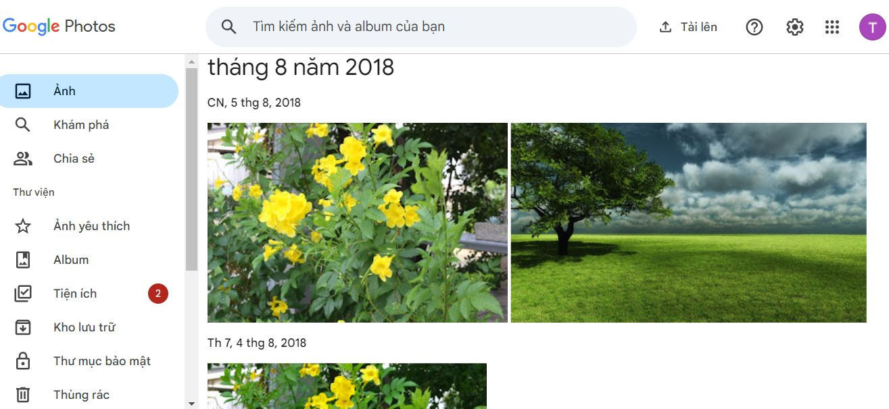
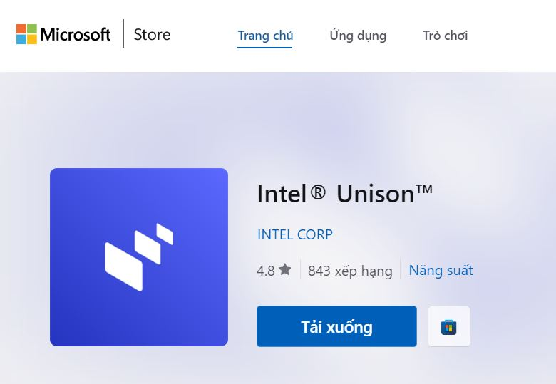

Bí quyết chuyển ảnh, video từ iPhone sang máy tính Windows chỉ trong vài phút
Bạn đang tìm kiếm cách chuyển ảnh và video từ iPhone sang máy tính Windows một cách nhanh chóng và dễ dàng? Với nhu cầu lưu trữ và sao lưu dữ liệu ngày càng tăng, việc nắm rõ các phương pháp hiệu quả để chuyển đổi dữ liệu là vô cùng quan trọng. Trong bài viết này, chúng tôi sẽ hướng dẫn bạn các cách đơn giản và hiệu quả nhất để thực hiện điều này.
1. Chuyển ảnh, Video từ Iphone sang máy tính Windows bằng cáp USB
Một trong những cách để chuyển ảnh, video từ Iphone sang máy tính nhanh chóng, hoàn toàn miễn phí và cực kỳ đơn giản mà ai cũng có thể thao tác được đó là sử dụng cáp USB.

Bước 1: Kết nối iPhone với máy tính Windows bằng cáp USB
Kết nối iPhone của bạn với máy tính Windows bằng cáp USB đi kèm. Đảm bảo rằng cáp USB hoạt động tốt để quá trình chuyển dữ liệu không bị gián đoạn.
Bước 2: Mở khóa iPhone và chọn "Tin cậy"
Khi kết nối, iPhone sẽ yêu cầu bạn mở khóa và chọn "Tin cậy" để cho phép truy cập dữ liệu. Đây là bước quan trọng để máy tính có thể nhận diện và truy cập dữ liệu từ iPhone.
Bước 3: Truy cập File Explorer trên Windows
Trên máy tính Windows, mở File Explorer và tìm iPhone trong danh sách thiết bị. Thông thường, bạn sẽ thấy iPhone dưới mục "This PC" hoặc "My Computer".
Bước 4: Sao chép ảnh và video từ thư mục DCIM
Đi tới thư mục DCIM trên iPhone, nơi lưu trữ tất cả ảnh và video của bạn. Chọn các file bạn muốn chuyển và sao chép chúng sang thư mục mong muốn trên máy tính của bạn.
2. Chuyển ảnh, Video từ Iphone sang máy tính Windows bằng iCloud
Ngoài việc sử dụng cáp USB để chuyển ảnh và video từ iPhone sang máy tính Windows, người dùng cũng có thể tận dụng iCloud để đồng bộ hóa hình ảnh trên iPhone. Phương pháp này hoàn toàn miễn phí và không đòi hỏi phải cài đặt thêm ứng dụng nào trên máy tính. Tuy nhiên, để thực hiện điều này, trước tiên người dùng cần sao lưu tất cả hình ảnh trên iPhone lên iCloud, sau đó mới có thể chuyển chúng sang máy tính thông qua iCloud Photos.
Bước 1: Sao lưu ảnh và video lên iCloud
Trước tiên, đảm bảo rằng ảnh và video của bạn đã được sao lưu lên iCloud. Vào Cài đặt > [tên của bạn] > iCloud > Ảnh và bật "Ảnh iCloud".
Bước 2: Truy cập iCloud.com trên máy tính Windows
Mở trình duyệt web và truy cập trang iCloud.com, sau đó đăng nhập bằng Apple ID của bạn.
Bước 3: Chọn mục "Photos"
Trong giao diện iCloud, chọn mục "Photos" để xem tất cả ảnh và video đã được sao lưu.
Bước 4: Tải xuống ảnh và video về máy tính
Chọn các ảnh và video bạn muốn tải xuống, sau đó nhấp vào biểu tượng tải về để lưu chúng về máy tính của bạn.
3. Chuyển ảnh, Video từ Iphone sang máy tính Windows bằng iTunes
Bước 1: Tải và cài đặt iTunes trên máy tính Windows
Truy cập trang web của Apple và tải về phiên bản iTunes mới nhất cho Windows. Cài đặt ứng dụng theo hướng dẫn.
Bước 2: Kết nối iPhone với máy tính và mở iTunes
Kết nối iPhone với máy tính bằng cáp USB và mở iTunes. Đảm bảo iTunes nhận diện được iPhone của bạn.
Bước 3: Chọn iPhone trong iTunes
Trong giao diện iTunes, chọn biểu tượng iPhone ở góc trên bên trái.
Bước 4: Đồng bộ ảnh từ iPhone sang máy tính
Chọn tab "Photos" trong menu bên trái và chọn các album hoặc ảnh bạn muốn đồng bộ. Nhấp vào "Apply" để bắt đầu quá trình đồng bộ.
4. Chuyển ảnh, Video từ Iphone sang máy tính Windows bằng ứng dụng bên thứ 3
Người dùng có thể sử dụng các ứng dụng lưu trữ đám mây như Google Photos, Dropbox hoặc OneDrive để chuyển ảnh và video từ iPhone sang máy tính Windows. Dưới đây là hướng dẫn chi tiết cho từng ứng dụng:
Google Photos

- Tải và cài đặt ứng dụng Google Photos trên iPhone, sau đó đăng nhập bằng tài khoản Google.
- Tải lên tất cả ảnh và video từ iPhone lên Google Photos.
- Truy cập trang web Google Photos trên máy tính và tải xuống ảnh và video bạn cần.
Dropbox
- Tải và cài đặt ứng dụng Dropbox trên iPhone.
- Tải lên ảnh và video từ iPhone lên Dropbox.
- Truy cập trang web Dropbox trên máy tính và tải xuống ảnh và video.
OneDrive
- Tải và cài đặt ứng dụng OneDrive trên iPhone.
- Tải lên ảnh và video từ iPhone lên OneDrive.
- Truy cập trang web OneDrive trên máy tính và tải xuống ảnh và video.
Bằng cách sử dụng các ứng dụng này, người dùng có thể dễ dàng chuyển dữ liệu mà không cần kết nối trực tiếp iPhone với máy tính thông qua cáp USB.
5. Chuyển ảnh, Video từ Iphone sang máy tính Windows bằng AirDrop trên Windows (chỉ dành cho Windows 10 và 11)
Để chuyển ảnh và video từ iPhone sang máy tính Windows, bạn có thể sử dụng ứng dụng Intel Unison. Đây là một giải pháp kết nối đa thiết bị của Intel, cho phép chia sẻ dữ liệu giữa các hệ điều hành một cách dễ dàng. Dưới đây là hướng dẫn cụ thể:

Bước 1: Bật Bluetooth và Wi-Fi
Trên cả iPhone và máy tính Windows, bật Bluetooth và Wi-Fi để đảm bảo kết nối không dây ổn định.
Bước 2: Cài đặt ứng dụng AirDrop từ Microsoft Store
Truy cập Microsoft Store, tìm kiếm và cài đặt ứng dụng phần mềm Intel Unison dành cho Windows.
Bước 3: Tải ứng dụng Intel Unison từ App Store trên iPhone.
Bước 4: Mở ứng dụng Intel Unison trên cả hai thiết bị và làm theo hướng dẫn để chuyển ảnh và video từ iPhone sang máy tính.
Ứng dụng Intel Unison hỗ trợ kết nối và chia sẻ dữ liệu giữa các thiết bị chạy iOS và Windows, mang lại trải nghiệm liền mạch mà không cần phải sử dụng cáp kết nối
Lưu ý cần nhớ:
- Không gian lưu trữ: Đảm bảo máy tính của bạn có đủ không gian lưu trữ trước khi bắt đầu chuyển dữ liệu.
- Sao lưu dữ liệu: Thường xuyên sao lưu dữ liệu để tránh mất mát do các sự cố không mong muốn.
- Bảo mật: Đảm bảo các tài khoản dịch vụ đám mây của bạn được bảo vệ bằng mật khẩu mạnh và xác thực hai yếu tố.
Việc chuyển ảnh và video từ iPhone sang máy tính Windows chưa bao giờ dễ dàng đến thế. Bằng cách sử dụng các phương pháp trên, bạn có thể nhanh chóng và hiệu quả lưu trữ và sao lưu dữ liệu quan trọng. Đặc biệt, nếu bạn thường xuyên làm việc với máy tính Windows, hãy thử sử dụng UltraViewer - một ứng dụng vô cùng cần thiết giúp bạn điều khiển và hỗ trợ từ xa dành cho máy tính Windows. Với UltraViewer, việc quản lý và hỗ trợ máy tính của bạn sẽ trở nên dễ dàng và thuận tiện hơn bao giờ hết. Hãy tải về và trải nghiệm ngay hôm nay!


Viết bình luận (Cancel Reply)